Demon Slayer - Kimetsu no Yaiba é uma série japonesa de mangá shōnen escrita e ilustrada por 'Koyoharu Gotōge'. O mangá é serializado desde 15 de fevereiro de 2016 e foi encerrado em 18 de maio de 2020 na revista semanal 'Weekly Shōnen Jump', com seus capítulos sendo reunidos em 23 volumes tankōbon pela editora 'Shueisha'. Uma adaptação de um mangá para um anime de 26 episódios, produzida pelo estúdio 'ufotable', teve sua 1ª temporada exibida entre 6 de abril e 28 de setembro de 2019,e 2ª temporada, entre 10 de outubro de 2021 e 13 de fevereiro de 2022.
X